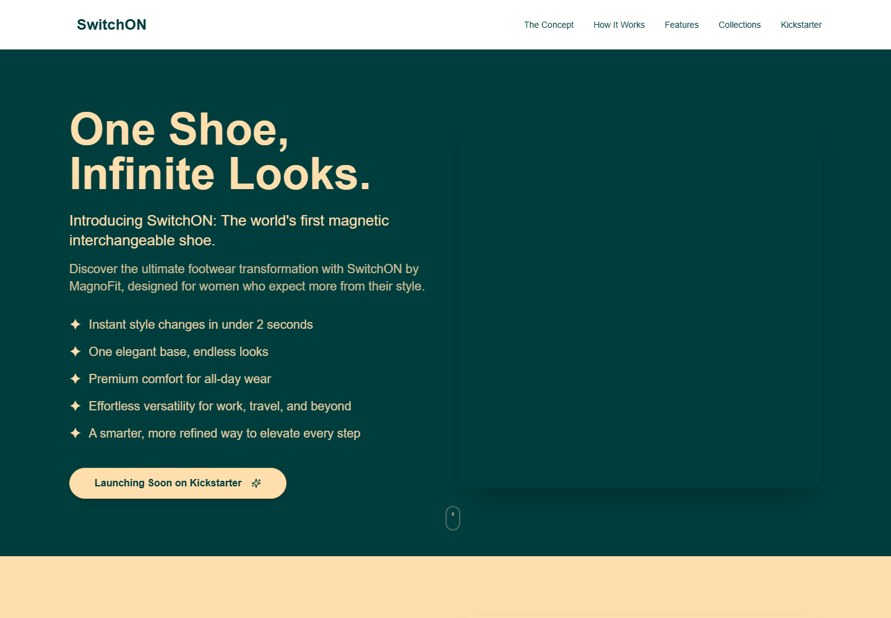
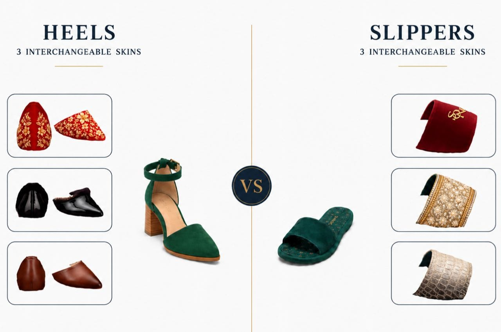

COMPLETED PROJECT · FULL STACK DEVELOPER
SwitchON — One Shoe, Multiple Looks
A digital product experience for a magnetic interchangeable footwear concept, designed to communicate a novel physical product clearly and support its path toward launch.

Product overview
SwitchON presents a magnetic interchangeable footwear system built around a simple idea: one shoe base can support multiple looks. Its public launch site introduces interchangeable heels and slippers, style collections and a planned global Kickstarter launch.
The digital experience must explain an unfamiliar product quickly. Visitors need to understand the base-and-skin concept, see the visual variety and move from curiosity toward launch interest without unnecessary friction.

My contribution
I worked on SwitchON as a full-stack developer, contributing across the public product experience without publishing private implementation details.
Product-facing interface
Supported a responsive experience that communicates the interchangeable product concept across desktop and mobile screens.
Application functionality
Contributed across frontend and backend concerns required by the product and its launch experience.
Content structure
Kept product categories, visual storytelling and calls to action understandable for first-time visitors.
Iterative delivery
Worked through an active delivery cycle while product features and launch content were refined.
Delivered outcome
The completed work provides SwitchON with a focused public destination for explaining its magnetic footwear concept and presenting the range of interchangeable styles. This page avoids unverified performance metrics and documents only the publicly visible result.
Need a product website or web application?
I work remotely with businesses in the USA, UK, Australia and worldwide.
Start a Conversation